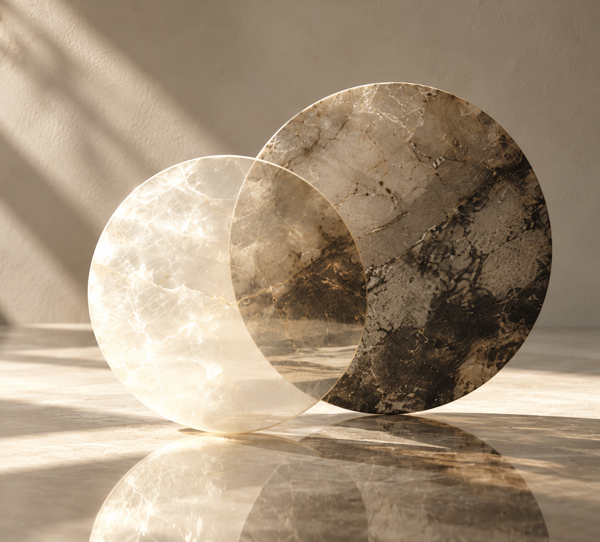

输入出生信息，生成四种盘面与传统解读。每条内容都能查看依据，供自我理解与参考。
使用出生地民用时间，不自动修正真太阳时。四柱以立春换年、节气换月；奇门为出生时刻局，梅花采用农历年月日时起卦。
请确认出生地时区；时刻未知时，先补充资料。
BAZI
从年、月、日、时四柱，阅读五行与十神，理解传统文化中的个人与相处议题。
MEIHUA
以出生时刻起卦，展开本卦、互卦与变卦，借体用关系提供一种思考角度。

RELATIONSHIP
并列两个人的命盘与自报偏好，找到彼此可以讨论的支持、边界与沟通方式。
排盘是指定流派和时间约定下的确定性计算。八字、梅花、星座提供传统或文化象义；生活化建议为项目自编，不是未来事件的科学预测。
紫微部分规则需要传统排盘性别；MBTI 仅使用你主动选择的已有类型，不从出生信息推断。星座采用固定日期简表，交界保留候选。
每条解读可展开查看输入值、规则编号、来源与审核说明。资料仅保留在本页内存，清空或刷新即可移除；主动导出的文件由你自行保管。
本版尚未审定完整格局、喜用神与大运。未支持的规则不会自动补齐。